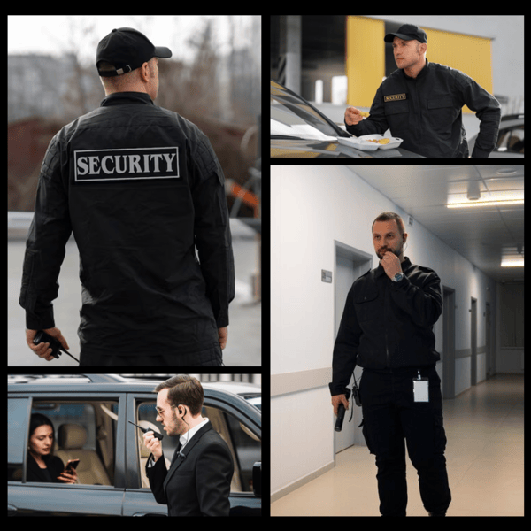
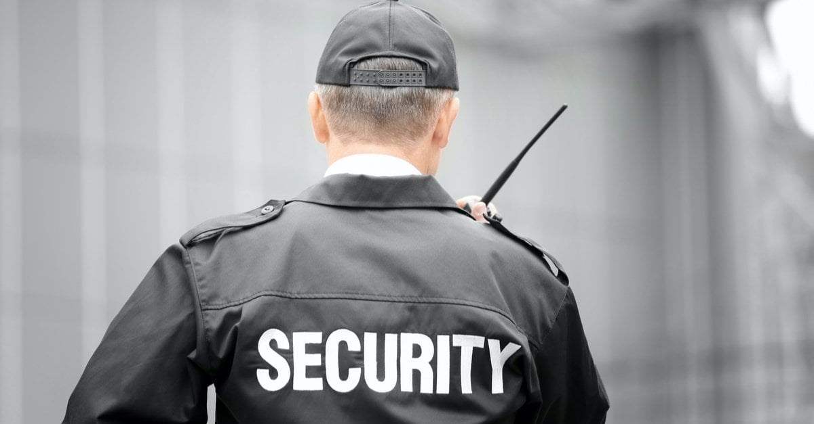

01
Armed Security
Armed security is used for assignments where the client requires an additional level of protection. Duties and equipment depend on the assignment and applicable laws and licensing requirements.
Effective security starts with understanding the risks a property faces and choosing coverage that matches those risks. From commercial buildings and construction sites to private events and residential communities, security personnel can provide visible protection, monitoring, access control, and incident reporting.

Professional security work involves much more than simply having someone present at a property. Depending on the assignment, guards can monitor entrances, verify visitors, patrol designated areas, observe suspicious activity, protect restricted locations, and communicate incidents to property managers or emergency contacts.
Security duties are normally based on the needs of the individual assignment. A busy commercial property may need access control and a visible presence during operating hours. A construction site can require overnight patrols and monitoring of equipment. An event may need personnel focused on entrances, crowds, parking, and restricted areas.
Clear procedures are important in every setting. Guards should know where they are expected to patrol, which areas are restricted, how visitors are handled, what incidents need to be documented, and who should be contacted when a problem occurs.
Security providers can offer different services depending on the property, schedule, environment, and responsibilities of the assignment.
Armed security is used for assignments where the client requires an additional level of protection. Duties and equipment depend on the assignment and applicable laws and licensing requirements.
Unarmed guards provide a visible security presence while handling responsibilities such as access monitoring, visitor management, patrols, observation, and incident reporting.
Mobile patrols involve scheduled or assigned checks of a property. They can help monitor large commercial sites, parking areas, warehouses, and properties that need regular security visits.
Event security can include entrance monitoring, crowd observation, parking oversight, restricted-area control, and communication with event organizers throughout an assignment.
Fire watch personnel monitor designated areas when required fire protection systems are unavailable or when site conditions require dedicated observation and reporting.
Construction security focuses on monitoring job sites, entrances, equipment, materials, vehicles, and activity during periods when construction crews are not present.

Commercial properties can experience different security concerns throughout the day. During business hours, the focus may be on controlling access and monitoring visitors. After closing, the priorities can shift toward perimeter checks, employee safety, unauthorized access, and property monitoring.
A security plan should account for the size of the property, number of entrances, operating schedule, surrounding environment, and specific areas that require additional attention.
Security personnel can also provide property managers with documented observations. Consistent reporting helps management understand what happens during each shift and identify recurring issues that need attention.
Construction sites often contain equipment, tools, materials, vehicles, unfinished structures, and restricted areas. These conditions can create security challenges when a site is unattended.
Guards can monitor designated entrances and help identify unauthorized people entering or leaving the property.
Regular observation can help document the condition and activity around equipment, vehicles, and stored materials.
Overnight and weekend coverage can provide a visible presence when construction crews are away from the site.
Written reports can provide property managers with a record of unusual activity, site conditions, and security concerns.
Events create a different security environment because people, staff, vendors, equipment, and visitors may all move through the same location at the same time. A security plan should account for entrances, exits, crowd movement, restricted areas, and emergency communication.
Security personnel can be assigned to specific positions or areas based on the event layout. Their responsibilities should be clearly explained before the event begins so that organizers and security staff understand who handles each situation.

Mobile patrol services are designed for properties that benefit from regular security checks rather than continuous stationary coverage at one location. A patrol officer can visit designated areas, inspect access points, observe site conditions, and document unusual activity.
Patrol schedules can be structured around the property's operating hours and risk patterns. For larger properties, patrols can also cover multiple buildings, parking areas, entrances, and perimeter locations during the same assignment.
The effectiveness of a patrol depends heavily on clear instructions and consistent reporting. Property managers should know what areas are being checked and what information will be included in patrol reports.
The right security arrangement depends on the actual needs of the property. Start by identifying what needs protection, when coverage is required, and what responsibilities security personnel will have during each shift.
It is also useful to consider whether the provider has experience with similar properties. A company working primarily with office buildings may have a different operating approach from a provider experienced with construction sites, industrial facilities, or large events.
Define the property, people, equipment, or areas that need protection.
Consider business hours, overnight periods, weekends, events, and other times when coverage is needed.
Establish expectations for access control, patrols, observation, reporting, and incident communication.
Look for experience with properties and assignments similar to your own security requirements.
Make sure everyone knows how incidents, unusual activity, and urgent situations will be communicated.
Businesses, property managers, contractors, and event organizers can learn more about Professional Security Guard Inc and the security services available for different types of assignments.
Depending on the assignment, a security guard may monitor entrances, control access, patrol a property, observe activity, assist with visitor procedures, document incidents, and follow established emergency procedures.
Armed security personnel carry authorized firearms as part of their assignment, while unarmed guards do not. The appropriate service depends on the property, assignment requirements, and applicable regulations.
Mobile patrols involve security personnel traveling through designated areas to conduct property checks, observe conditions, and document issues according to the assignment's procedures.
Yes. Construction security can include entrance monitoring, property patrols, equipment observation, after-hours coverage, and incident reporting.
Event security can include entrance monitoring, crowd observation, restricted-area control, parking oversight, and communication with event organizers.
Reports create a record of observations, incidents, patrol activity, and unusual conditions. They can also help property managers identify recurring security concerns.